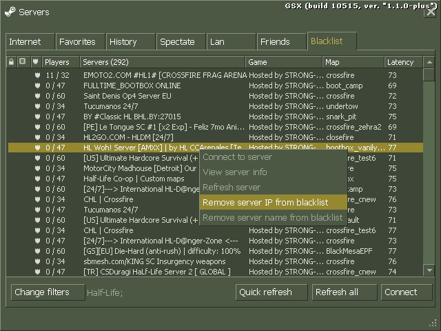

GoldSrc and its components improvement project.
Based on Steam version of Half-Life, steam_legacy branch (build 8684).
Goals
- Bugfixes, especially critical ones
- Adding new QoL features
- Improving existing systems
- Optimizing
- Extending engine limits and its API/SDK
Improvements
- Unlocked FPS on connecting process
- Server blacklist by name or IP
- Higher limits: AllocBlock (512), studiomodel textures (1024x1024), etc.
- All other changes you can find in changelog here.
Screenshots


You can download the latest version of GSX by using updater.
Download updater
You need to extract updater contents to your Half-Life directory.
Then you need to downgrade your HL to steam_legacy.
After that you can run updater and it will download latest GSX version.
You can also use it to download new versions in the future.
Also don't forget about Discord server! It's the best way to get notified about new updates, report issues and so on!
WARNING:
GSX is not binary compatible with original engine. This means that plugins/mods that do binary code analysis probably won't work here.